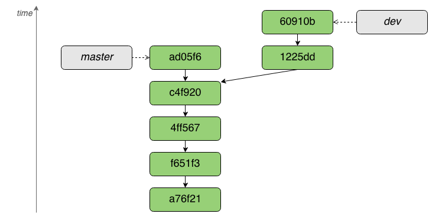
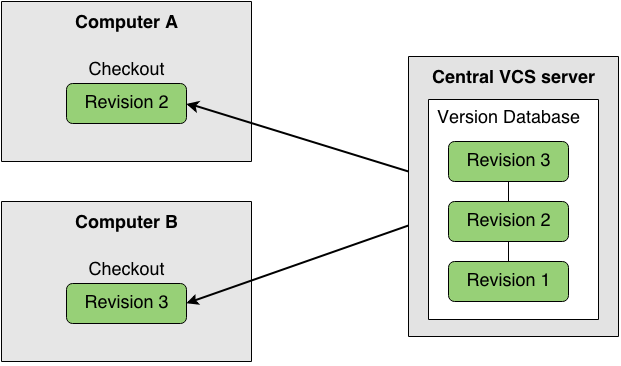
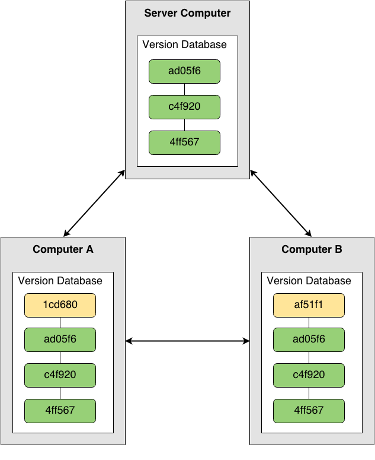

Введення в Git
Олександр Горносталь
Основні поняття
branch
commit
diff
merge

“Git – розподілена система контроля ревізій з акцентом на швидкість.”
“Git – розподілена система контроля ревізій з акцентом на швидкість.”


Переваги розподілених систем
- швидкість операцій
- можна працювати офлайн
- кожен програміст має свого роду бекап проекту
Офлайн можна
- переглядати diff
- робити commit
- переглядати історію комітів
- переключатись між гілками
- створювати та зливати (merge) гілки
- знайти будь-яку попередню версію файла
Перші кроки
$ git config --global user.name "Aleksandr Gornostal" $ git config --global user.email "sanya.gornostal@gmail.com"
Створення репозиторію
$ touch hello_world.js $ git init
$ tree -a . ├── .git │ ├── branches │ ├── config │ ├── description │ ├── HEAD │ ├── hooks │ │ ├── applypatch-msg.sample │ │ ├── commit-msg.sample │ │ ├── ... │ │ └── update.sample │ ├── info │ │ └── exclude │ ├── objects │ │ ├── info │ │ └── pack │ └── refs │ ├── heads │ └── tags └── hello_world.js 10 directories, 13 files
$ touch hello_world.js $ git init $ git add .
$ tree -a . ├── .git │ ├── branches │ ├── COMMIT_EDITMSG │ ├── config │ ├── description │ ├── HEAD │ ├── hooks │ │ ├── applypatch-msg.sample │ │ ├── ... │ │ └── update.sample │ ├── index │ ├── info │ │ └── exclude │ ├── logs │ │ ├── HEAD │ │ └── refs │ │ └── heads │ │ └── master │ ├── objects │ │ ├── ad │ │ │ └── 9a27de954d7ae76f122db7d0a51556390e9b9d │ │ ├── e6 │ │ │ └── 9de29bb2d1d6434b8b29ae775ad8c2e48c5391 │ │ ├── f6 │ │ │ └── e463f25da129be72316280c247520316850865 │ │ ├── info │ │ └── pack │ └── refs │ ├── heads │ │ └── master │ └── tags └── hello_world.js 16 directories, 21 files
Клонування репозиторію
$ git clone git@github.com:jquery/jquery.git
Cloning into 'jquery'... remote: Reusing existing pack: 33399, done. remote: Total 33399 (delta 0), reused 0 (delta 0) Receiving objects: 100% (33399/33399), 19.79 MiB | 1.47 MiB/s, done. Resolving deltas: 100% (23682/23682), done.